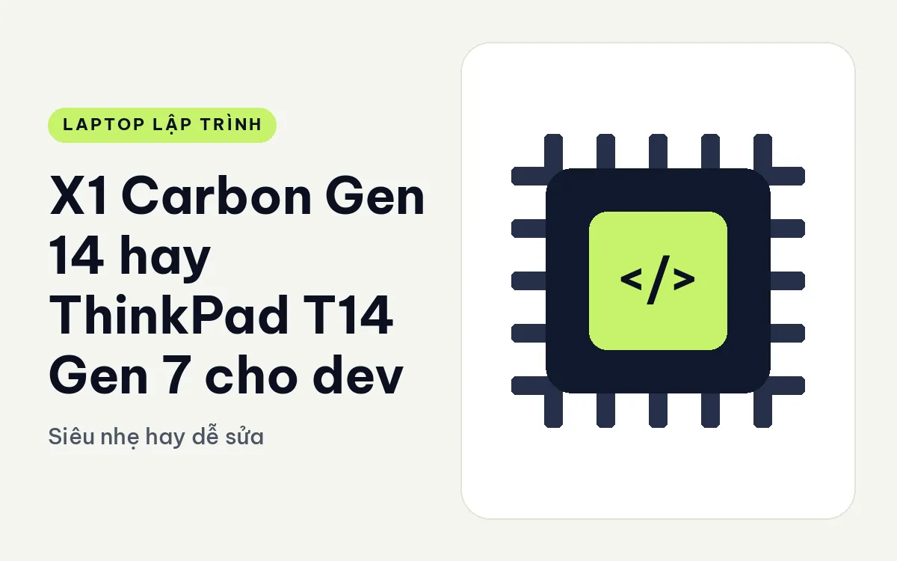
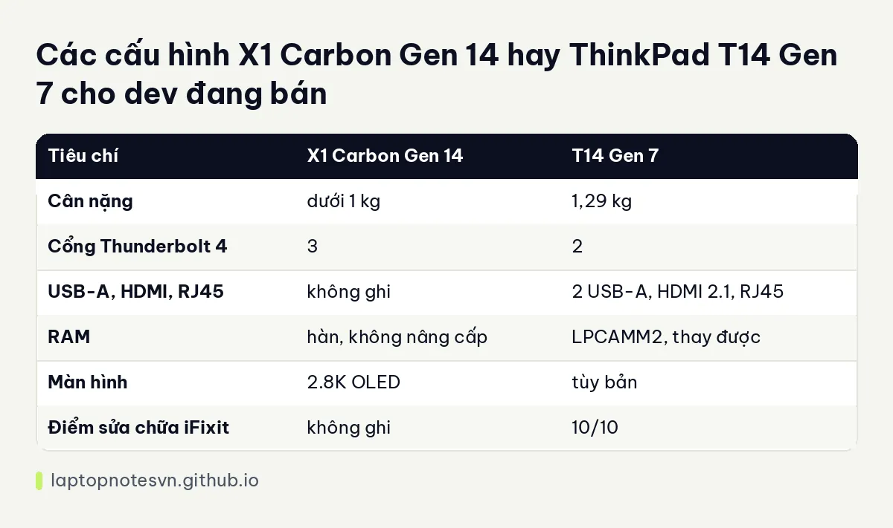

X1 Carbon Gen 14 hay ThinkPad T14 Gen 7 cho dev - Siêu nhẹ hay dễ sửa

Cả hai đều mang tên ThinkPad, cùng thuộc dòng 14 inch cho dân công sở, nhưng triết lý thiết kế đi hai hướng gần như trái ngược. X1 Carbon theo đuổi sự nhẹ đến mức tối đa, hy sinh khả năng tự sửa. T14 theo đuổi sự bền và dễ bảo trì, chấp nhận nặng hơn một chút. Với dev, câu hỏi thực sự là: bạn cần nhẹ hơn, hay cần máy mà năm thứ ba vẫn nâng cấp được.
Lựa chọn nhẹ nhất là ThinkPad X1 Carbon Gen 14 Aura Edition.
Lựa chọn dễ sửa nhất là ThinkPad T14 Gen 7.
Cảm giác cầm và độ bền của hai máy
X1 Carbon Gen 14 nặng dưới 1 kg, có 3 cổng Thunderbolt 4, RAM hàn không nâng cấp, màn 2.8K OLED. T14 Gen 7 nặng 1,29 kg, có 2 cổng Thunderbolt 4, 2 cổng USB-A, HDMI 2.1 và RJ45, RAM dùng module LPCAMM2 thay được, điểm sửa chữa trên iFixit là 10/10.
Chênh lệch khoảng 300 gam nghe nhỏ nhưng ba lô đi làm mỗi ngày sẽ cảm thấy. Đổi lại, T14 có cổng USB-A để cắm thiết bị cũ và RJ45 để cắm dây mạng, hai thứ mà X1 Carbon không có sẵn. Nếu bạn làm việc cạnh server hoặc phải cắm dây mạng thường xuyên, đây là lý do để cân nhắc T14.
Bản nào đủ sức cho việc code hằng ngày
Hai máy trong cùng danh mục của cửa hàng nhưng cấu hình cụ thể khác nhau và thay đổi theo đợt hàng. Bảng dưới chỉ nêu những khác biệt cố định từ dữ liệu:

| Tiêu chí | X1 Carbon Gen 14 | T14 Gen 7 |
|---|---|---|
| Cân nặng | dưới 1 kg | 1,29 kg |
| Cổng Thunderbolt 4 | 3 | 2 |
| USB-A, HDMI, RJ45 | không ghi | 2 USB-A, HDMI 2.1, RJ45 |
| RAM | hàn, không nâng cấp | LPCAMM2, thay được |
| Màn hình | 2.8K OLED | tùy bản |
| Điểm sửa chữa iFixit | không ghi | 10/10 |
Để tra từng cấu hình CPU, RAM, SSD đang còn hàng, hãy mở trang sản phẩm của từng máy. Bài này không chép lại số liệu mà bạn có thể kiểm tra sai khác theo từng đợt.
Với dev, dung lượng RAM quan trọng hơn tốc độ CPU trong nhiều trường hợp. Vì X1 Carbon không nâng được RAM, bạn phải chọn đúng dung lượng ngay khi mua. Bài lập trình viên cần bao nhiêu RAM giúp bạn tính cho công việc của mình.
Mỗi máy hợp với nhóm dev nào
- Dev đi công tác nhiều, làm ở quán cà phê, sân bay: X1 Carbon, nhẹ nhất.
- Dev ở văn phòng, cắm dây mạng, nhiều thiết bị cũ: T14 với RJ45 và USB-A.
- Dev dự định dùng máy năm năm: T14 vì RAM thay được, máy dễ mở.
- Dev dùng màn hình lâu, thích OLED: X1 Carbon với màn 2.8K OLED.
- Dev freelancer cần tự sửa máy khi hỏng: T14 điểm iFixit 10/10.
Bảo trì và vòng đời
Máy dễ sửa có giá trị lớn hơn bạn nghĩ. Khi pin chai sau vài năm, khi SSD đầy hay khi bàn phím cần thay, T14 cho phép bạn tự làm hoặc nhờ thợ với chi phí linh kiện thấp. X1 Carbon mỏng và nhẹ nhờ thiết kế kín, nên mỗi lần sửa thường phức tạp hơn. Đó là cái giá của sự gọn nhẹ.
Ngược lại, nếu bạn có chu kỳ thay máy ba năm một lần, tính dễ sửa ít còn ý nghĩa, và X1 Carbon sẽ thoải mái hơn mỗi ngày.
Một ngày làm việc với mỗi máy
Hình dung một ngày điển hình. Sáng bạn mang máy tới văn phòng, trưa ra quán ăn mở máy sửa lỗi gấp, chiều họp ở phòng khác, tối về nhà cắm màn ngoài. Với X1 Carbon, mọi khâu di chuyển nhẹ nhàng, và ba cổng Thunderbolt 4 đủ để cắm sạc, màn ngoài và ổ cứng cùng lúc. Bạn chỉ cần mang thêm một bộ chuyển đổi nếu muốn dây mạng.
Với T14, bạn nặng hơn một chút nhưng cắm dây mạng và HDMI trực tiếp, không cần mang gì thêm. Với dev hay làm việc ở nhiều nơi có hạ tầng khác nhau, không phải lúc nào cũng có hub sẵn, cổng đầy đủ tiết kiệm được nhiều rắc rối nhỏ.
Chuyện màn hình cũng đáng nói. OLED 2.8K của X1 Carbon cho màu và độ tương phản đẹp, nhưng khi bạn mở terminal nền đen nhiều giờ thì lợi thế chủ yếu là sự dễ chịu khi đọc. Dữ liệu T14 không ghi cố định màn nào, nên bạn cần xem trang sản phẩm của từng bản.
Lưu ý cuối: chọn máy theo thói quen thật của mình chứ đừng theo thông số đẹp nhất. Nếu bạn ghi nhật ký thời gian trong một tuần và thấy mình ngồi ở nhà hoặc văn phòng quá nửa thời gian, lợi thế về cân nặng của X1 Carbon sẽ ít được dùng tới.
Lời khuyên chọn máy theo từng trường hợp
Chọn X1 Carbon Gen 14 nếu bạn mang máy đi nhiều, thích màn OLED và sẵn sàng chốt RAM ngay từ đầu. Ghi chú riêng nằm ở bài X1 Carbon Gen 14 cho lập trình.
Chọn T14 Gen 7 nếu bạn cần cổng đầy đủ, RAM nâng được và một cỗ máy bền. Góc nhìn riêng của máy nằm ở T14 Gen 7 cho lập trình.
Một cách quyết nhanh: nếu hôm nay bạn mang máy đi hơn ba ngày một tuần, chọn X1 Carbon. Nếu chủ yếu ngồi một chỗ, chọn T14.
Đăng ngày 09/11/2026